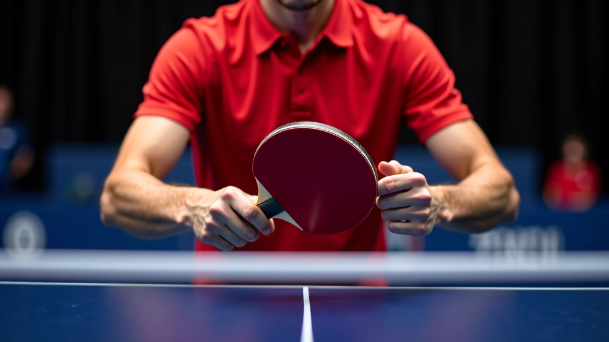
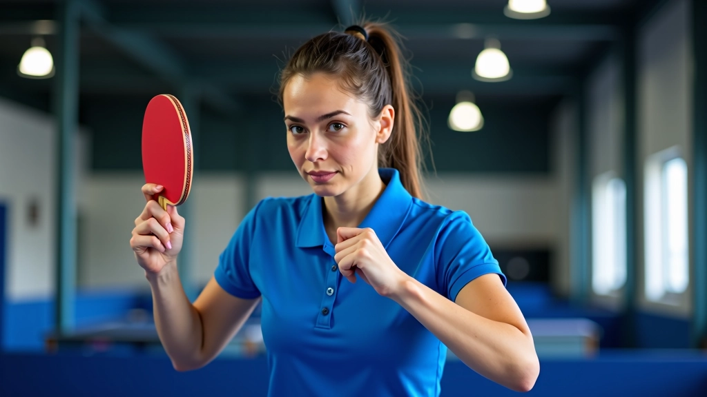
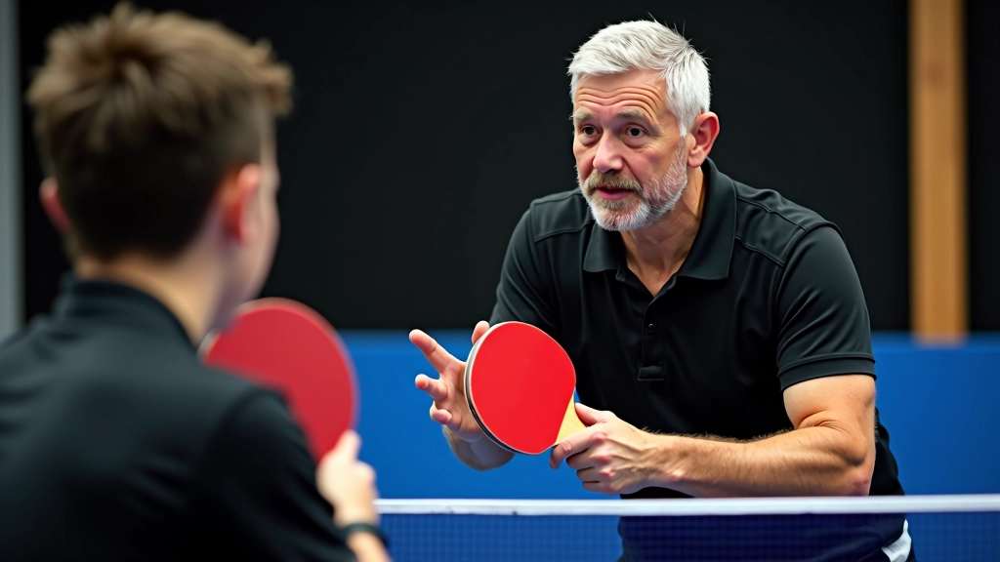

مقارنة أنماط القبضة المختلفة وكيفية الاختيار
استكشف الفروقات بين الأسلوب الصيني والأسلوب الأوروبي في قبضة القلم واختر ما يناسبك أكثر
فهم الأساسيات
اختيار نمط القبضة الصحيح هو أحد أهم القرارات التي ستتخذها كلاعب تنس طاولة. هناك نمطان رئيسيان يهيمنان على اللعبة — الصيني والأوروبي — وكل واحد منهما يقدم مزايا فريدة تتناسب مع أسلوب لعب مختلف.
المشكلة أن معظم المبتدئين يختارون نمطًا بناءً على ما يرونه في مقاطع الفيديو أو ما يفضله مدربهم الأول. لكن الحقيقة أعمق من ذلك. نمط القبضة يؤثر على سرعتك وقوتك والتحكم في الكرة. يؤثر على كيفية تحركك حول الطاولة. يؤثر حتى على المشاعر التي تشعر بها عند اللعب.

الأسلوب الصيني
القبضة الصينية — أو ما يسميها البعض "القبضة المسطحة" — تُمسك بالمضرب بطريقة أقرب إلى إمساك فرشاة الرسم. يديك تكون أفقية تقريبًا، والأصابع تلتف حول الجزء الخلفي من المضرب بينما تمتد الإبهام والسبابة على الجانبين.
هذا الأسلوب يعطيك قوة كبيرة. عندما تضرب الكرة — خاصة من الجانبين — يمكنك نقل الكثير من وزن جسمك إلى الضربة. اللاعبون الصينيون يشتهرون بضرباتهم القوية والدقيقة جدًا.
- قوة عالية في الضربات الجانبية
- تحكم ممتاز في الكرات القصيرة
- أفضل للضربات الهجومية من المنتصف
- أقل مرونة في الدفاع الخلفي

الأسلوب الأوروبي

القبضة الأوروبية — أو "الهاند شيك" كما يسميها الكثيرون — تشبه مصافحة اليد مع صديق. المضرب يكون عموديًا، والأصابع تلتف حول المقبض بشكل طبيعي. الإبهام والسبابة تشكلان حرف V يشير نحو الأعلى.
ما يميز هذا الأسلوب هو التوازن. نعم، قد لا تكون قوتك مثل اللاعب الصيني، لكنك تكسب مرونة. تستطيع الدفاع بسهولة. تستطيع الانتقال من الهجوم للدفاع دون تغيير القبضة. وسرعة يديك تكون أسرع بكثير.
- مرونة عالية في جميع المواقف
- سرعة يد ممتازة وتغييرات سريعة
- دفاع قوي وقريب من الطاولة
- قوة أقل في الضربات الجانبية البعيدة
مقارنة مباشرة
عندما نقارن بين الأسلوبين بشكل مباشر، نجد أن الاختيار يعتمد على أسلوب لعبك الطبيعي. إذا كنت شخصًا قويًا وتحب الضربات الهجومية من المنتصف والجانبين، فالأسلوب الصيني قد يناسبك أكثر. لكن إذا كنت تفضل اللعب السريع والتحركات المتكررة والدفاع الجيد، فالأسلوب الأوروبي قد يكون خيارك الأفضل.
هناك فرق آخر مهم جدًا — الحركة حول الطاولة. اللاعبون الصينيون يميلون للبقاء أقرب للطاولة ويحركون أجسامهم أكثر. اللاعبون الأوروبيون يتحركون أكثر جانبًا ويستخدمون أيديهم بسرعة أكبر. كل واحد منهما يتطلب تدريب مختلف.
كيفية الاختيار
الحقيقة البسيطة هي أن معظم اللاعبين لا يختارون نمط القبضة — بل يختار المدرب الأول لهم. وهذا ليس سيئًا دائمًا. إذا كنت مبتدئًا، فأي من الأسلوبين سيعمل بشكل جيد. الأهم هو أن تتعلم الأساسيات بشكل صحيح أولاً.
لكن إذا كنت تتحكم بالفعل وتريد اختيار نمطك الخاص، فهناك بعض الأسئلة التي يجب أن تطرحها على نفسك. أولاً، ما نوع اللعب الذي تستمتع به؟ هل تحب الضربات القوية أم السرعة والحركة؟ ثانيًا، أين نقاط قوتك الطبيعية؟ هل أنت قوي من الناحية البدنية أم أنك سريع الحركة؟
ثالثًا، ما الذي تشعر به براحة أكثر؟ جرب كلا الأسلوبين لمدة أسبوع على الأقل. اضرب بعض الكرات، مارس الحركات الأساسية. سترى بسرعة أي واحد يشعر بأنه طبيعي لك.

نصائح عملية للتحويل
إذا قررت التحويل من أسلوب لآخر — وهذا يحدث أحيانًا — فأنت تحتاج إلى صبر. التحويل ليس سهلاً. عضلاتك اعتادت على طريقة معينة، ودماغك يتذكر الحركات بطريقة معينة. لكنه ممكن تمامًا.
ابدأ بالحركات الأساسية جدًا. لا تحاول تشغيل مباريات كاملة. اقضِ 15-20 دقيقة يوميًا على تعلم القبضة الجديدة والضربات الأساسية. ركز على الأداء الصحيح وليس القوة. بعد أسبوعين إلى ثلاثة أسابيع، ستشعر بأن الحركات تصبح أكثر طبيعية.
نصيحة مهمة: لا تتوقع أن تلعب بنفس المستوى مباشرة بعد التحويل. قد تشعر بأنك عدت للخلف. هذا طبيعي تمامًا. معظم اللاعبين يستغرقون 4-6 أسابيع حتى يعودوا إلى مستواهم السابق بالقبضة الجديدة.
التدريب التدريجي
ابدأ ببطء وزد الشدة تدريجيًا. لا تضغط على نفسك بشدة في البداية.
الممارسة المنتظمة
الممارسة اليومية أفضل من الممارسة المكثفة أسبوعيًا. حتى 20 دقيقة يوميًا كافية.
الصبر والمثابرة
لا تستسلم بسرعة. التحويل يستغرق وقتًا، لكن النتائج تستحق الانتظار.
الخلاصة
لا يوجد نمط قبضة "أفضل" بشكل مطلق. كل من الأسلوب الصيني والأوروبي لهما مزايا وعيوب. الاختيار الصحيح هو الذي يناسب أسلوب لعبك وقوتك الطبيعية وما تشعر به براحة أكثر. المهم أن تتعلم الأساسيات بشكل صحيح أولاً — سواء كان الأسلوب الصيني أو الأوروبي.
تذكر أن نمط القبضة ليس الشيء الوحيد الذي يحدد نجاحك. التدريب المنتظم، الفهم العميق للحركات، واللياقة البدنية — كل هذه الأشياء مهمة بنفس القدر. اختر نمطك بحكمة، مارسه بانتظام، وركز على التحسن المستمر.
ملاحظة مهمة
هذا الدليل معلومات تعليمية بحتة تهدف إلى مساعدتك على فهم أنماط القبضة المختلفة في تنس الطاولة. كل لاعب فريد، وما ينجح مع شخص قد لا ينجح مع آخر. نوصيك بالعمل مع مدرب متخصص يمكنه تقييم احتياجاتك الشخصية والتوصية بالنمط الأنسب لك. التقدم في الرياضة يتطلب صبرًا والتزامًا منتظمًا.

فريق أكاديمية طنطا التحرير
فريق التحرير والمراجعة
كتبه فريق تحرير أكاديمية طنطا، متخصص في تقديم إرشادات عملية وسهلة المتابعة حول إتقان قبضة القلم في تنس الطاولة.
مقالات ذات صلة

أساسيات قبضة القلم: الخطوات الأولى الصحيحة
تعلم كيفية الإمساك الصحيح بالمضرب وتجنب الأخطاء الشائعة التي يرتكبها المبتدئون في البداية...

تطوير القوة والثبات في قبضتك
تمارين عملية تساعدك على بناء قوة اليد والمعصم وتحسين التحكم بالمضرب أثناء اللعب...
حركات المعصم والأصابع: التحكم الدقيق في الضربات
اكتشف كيفية استخدام حركات المعصم والأصابع بشكل صحيح لتحسين دقتك والتحكم في سرعة الضربات...